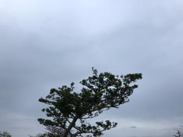

うるがいの話 ある日
最新: かぎやで風節【うるがいの話 ある日】とは 一日だけのプログです
『うるがいの話』の最新一日だけのプログで、通信料が少なく経済的だ。カニの画像をクリックすると全ての日付が載る『うるがいの話』サイトを表示します
|
|
【うるがいの話】 うるがい(ｳﾙｶﾞｲ urugai)とは、『もずくがに』の名前でとても大きくなります。 |
|---|---|
|
|
【カミマヤーの話】 猫のことを方言でマヤーといいます。カミマヤー（kamimayaa）とは、神の猫のことです。 |
|
【タナガーの話】 たながー（ﾀﾅｶﾞｰtanagaa）とは手長えびのことで、何種類かあり大きいのは車 エビぐらいになります。 |

|
【ぶながぁの話】 ぶながー(bunagaa)とは、赤い髪の毛、赤い身体、そして身長は１ｍ２０ｃｍ ぐらい、川の蟹を食べているの目撃された。場所は沖縄県国頭郡大宜味村のと ある村僕の隣近所に住んでいる爺さんから、聞いた話です。 |
|
|
【ギーマの話】 ギーマ(giima)とは、山原の里山に咲くスズランに似た、 花を付けます。実は食べられます、 気が付くと口の周りが紫になっています。 |
2022年01月06日 (木）かぎやで風節
16:06


『かぎやで風節』を三線で弾いてみた、んーイマイチ、イントロはよく知って
いるがそれ以降はなじみがない。古典なので、歌詞もまったく分からん。妹達
は、いろいろなところで姉妹揃って踊りを披露していたが、よくできたもんだ
と感心する。とりあえず、曲を覚えるまで練習をすることにした。そして前か
ら弾きたかったシューベルトのセレナーデを楽譜ソフトに登録した。本日から
三線で練習することする。
『シューベルト・セレナーデ（三線演奏）（ユーチューブ）』３分４９秒
三線演奏
新型コロナの感染拡大で県立高校は明日から分散登校、部活動も原則禁止と新
聞に載っている、なんととんでもない状態になってきている。楽しそうにして
いる部活動の学生を見ているオジンはつらい。ネットスーパーはイオンだけだ
ったが、昨日リュウボウネットも新規に利用することにした。ネットで利用の
新規登録をしたが、ネット環境やパソコンを使えない人達はどうするのだろう
となるべく人との接触を避けたいヨメは、ポッソと呟いた。スーパーに向かう
キャリアを引く老人達を、夕方のジョギングの途中で目撃している私はまたつ
らい気持ちになる。
１６時０２分 ビットコインの総資産 ￥１４、４６２
オヨ！、下がり過ぎ